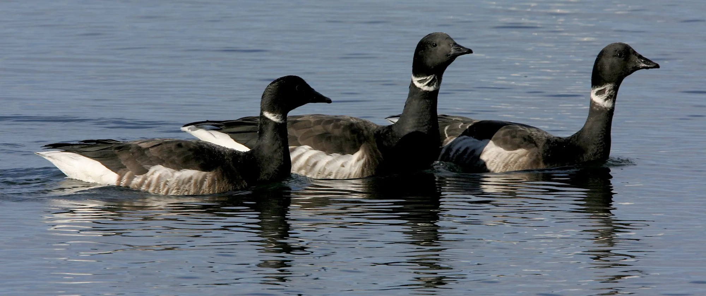
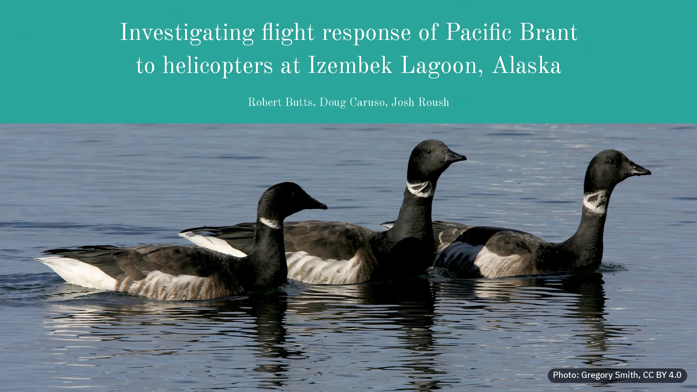

Graduate project
Helicopters and Pacific brant at Izembek Lagoon
A team statistics project from my M.S. at Ohio State. We used logistic regression to find how a helicopter's distance and altitude change the chance that a flock of Pacific brant takes flight, then turned the model into flight guidance.

observations of brant flocks during helicopter test flights
of those observations ended with the flock taking flight (285 of 464)
AIC for distance alone, far better than 616 for altitude alone. Distance mattered most.
the sideways distance we recommend to keep the chance of flight near 10% or less
The project in brief
The question
Each fall, more than 100,000 Pacific brant feed on eelgrass at Izembek Lagoon, Alaska, to store energy for a long migration. Helicopter flights can scare flocks into the air and cost them that energy. The FAA asks aircraft to stay at least 2,000 feet (609 meters) above the lagoon. We asked whether that rule is enough, and what distance and altitude keep flocks on the water.
What we did
Spotters recorded how flocks responded to test flights by Bell 205 and Sikorsky HH-3F helicopters. Each of the 464 observations has the helicopter's altitude, its lateral (sideways) distance from the flock, and whether the flock flew. We explored the data, then compared logistic regression models:
- altitude only
- lateral distance only
- both together
- both plus their interaction
What we found
Lateral distance was the strongest predictor: the farther away the helicopter, the lower the chance of flight. Our final model uses both distance and altitude. The interaction model scored better on paper, but it predicted nearly certain flight at distances where the data showed almost none, so we did not trust it.
Our recommendations
To keep the chance of a flight response at about 10% or less:
- Keep helicopters at least 2,000 meters away to the side.
- Within 1,000 meters, flocks are more likely than not to take flight at any altitude.
- Closer than 2,000 meters, stay below 100 meters of altitude.
- At the FAA minimum altitude of 609 meters, stay at least 2,400 to 2,500 meters away.
- Beyond 3,200 meters away, altitude can be as high as 1,500 meters.
The full presentation

Click either side of a slide, use the arrow keys, swipe, or pick a slide above.
Credits and sources
Team
Robert Butts, Doug Caruso, and Josh Roush, for GRADTDA 5402 at The Ohio State University.
The original study
The data and the research question come from a published case study with the same title: Erickson, W. P., Nick, T. G., and Ward, D. H. (1998). Investigating flight response of Pacific brant to helicopters at Izembek Lagoon, Alaska by using logistic regression. In R. Peck, L. D. Haugh, and A. Goodman (Eds.), Statistical Case Studies: A Collaboration Between Academe and Industry, chapter 13. SIAM.
Photo
Pacific Black Brant by Gregory Smith, via the U.S. Fish and Wildlife Service, licensed under CC BY 4.0. Cropped, and used on the title slide with the project title added.
Maps
Slides 22 and 23 show satellite imagery from Google Maps, with our model's probabilities shaded on top. Map imagery: Google.